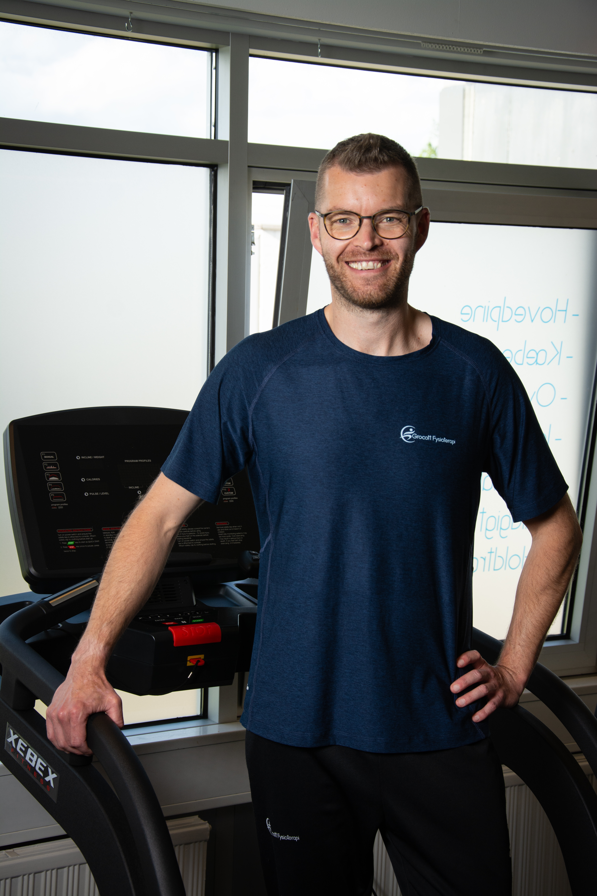
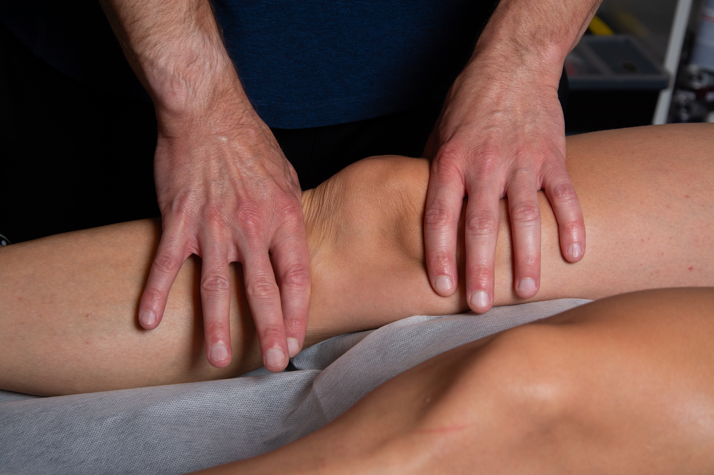
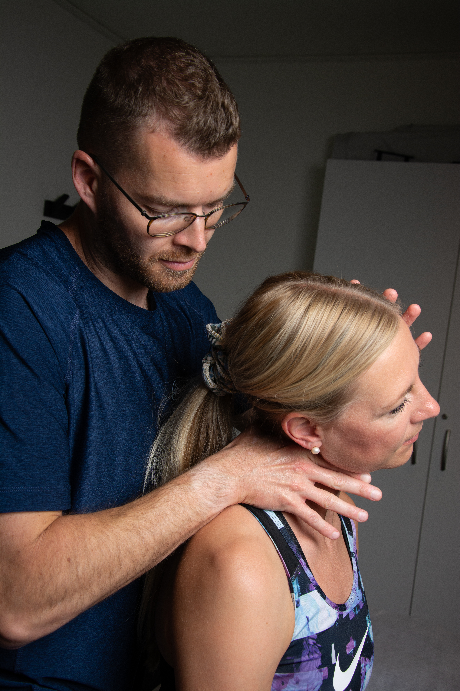

Uddannelse:
Diagnostik, behandling og genoptræning: Patienter med lumbal diskusprolaps
Udbyder:
v/Martin Melbye
Mit navn er Nicolai Engstrøm Grocott! Det er mig som driver Grocott Fysioterapi, som er placeret i Langeskov, i Kerteminde Kommune.
Jeg bor selv privat i Langeskov med min hustru, vores 2 drenge og vores hund.
Jeg har altid haft en kæmpe interesse inden for kroppen, idræt og mennesker, derfor var det helt naturligt for mig at tage uddannelsen som fysioterapeut.


Inden jeg startede som fysioterapeut, tog jeg uddannelsen til Elite badminton-træner på Aalborg Trænerakademi.
Dernæst gik turen til Fyn hvor jeg studerede Idræt og Sundhed på SDU i 2.5 år.
I 2012 blev jeg færdiguddannet fysioterapeut. Lige siden har jeg videreuddannet mig inden for faget, hvilket
jeg altid vil fortsætte med, da vi aldrig er færdige med at lære og udvikle os.
I løbet af min tid som fysioterapeut har jeg været vidt omkring for at udvide mine kompetencer.
Jeg har bl.a været omkring Socialpsykiatrien i Roskilde Kommune og Socialafdelingen i Kerteminde Kommune.
Her var der et stort fokus på at opbygge en god relation, og skabe de rigtige rammer, for at borgerne
i kommunen kunne få de rette tilbud og muligheder inden for sundhed og fysisk aktivitet.
Jeg har som fagperson skulle lære at tage de “svære samtaler” op, og på samme tid kunne tilpasse min intervention til den givne situation.

Arbejdet som fysioterapeut er utroligt givende for mig. Jeg får lov til at gøre brug af alt det jeg har
erfaret og på samme tid indhente ny værdifuld viden, som kun er med til at gøre mit arbejde endnu mere spændende.
Siden 2018, har jeg været selvstændig fysioterapeut. Jeg har været indlejer hos ‘Din Fysioterapi’ i Vissenbjerg,
hvor jeg har beskæftiget mig med individuelle behandlingsforløb, holdtræning, genoptræning og forebyggende træningsforløb.
Jeg har igennem min tid som fysioterapeut draget mig mange erfaringer og undervejs fundet min egen retning og store interesseområder indenfor faget.
Jeg har taget mange forskellige kurser, men fælles for dem alle er, at jeg som fagperson, har taget de vigtigste elementer
med mig og inkorporeret dem i dagligdagen med mine klienter. Jeg har igennem de senere år haft et stort fokus på behandling
og videreuddannelse inden for skulder, nakke, hovedpine, kæbeproblematikker og idrætsfysioterapi.
Diagnostik, behandling og genoptræning: Patienter med lumbal diskusprolaps
v/Martin Melbye
Diagnostik og behandling af hovedpine: Spændingshovedpine og nakke-relateret
Dansk Selskab for Fysioterapi
Grocott Fysioterapi arbejder udenfor overenskomst og det er derfor
ikke muligt at få tilskud fra den offentlige sygesikring.
Derfor er lægehenvisning heller ikke en forudsætning, for at komme til behandling
hos Grocott Fysioterapi.
Derimod samarbejder jeg med de fleste sundhedsforsikringer
og medlemmer får ligeledes tilskud fra sygeforsikring Danmark.